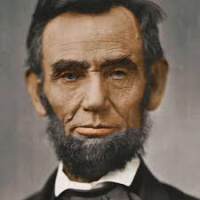

Biography

Abraham Lincoln was the 16th president of the United States and is regarded as one of America's greatest heroes due to his role as savior of the Union and emancipator of enslaved people. His rise from humble beginnings to achieving the highest office in the land is a remarkable story. Lincoln was assassinated at a time when his country needed him to complete the great task of reunifying the nation. His eloquent support of democracy and insistence that the Union was worth saving embody the ideals of self-government that all nations strive to achieve. Lincoln's distinctively humane personality and incredible impact on the nation have endowed him with an enduring legacy. In 1834, Lincoln began his political career and was elected to the Illinois state legislature as a member of the Whig Party. It was around this time that he decided to become a lawyer, teaching himself the law by reading William Blackstone's Commentaries on the Laws of England. After being admitted to the bar in 1837, he moved to Springfield, Illinois, and began to practice in the John T. Stuart law firm. In 1844, Lincoln partnered with William Herndon in the practice of law. Though the two had different jurisprudent styles, they developed a close professional and personal relationship. Lincoln made a good living in his early years as a lawyer, but found that Springfield alone didn't offer enough work, so to supplement his income, he followed the court as it made its rounds on the circuit to the various county seats in Illinois.
Family
Lincoln was married to Mary Todd on November 4, 1842. Todd was a high-spirited, well-educated woman from a distinguished Kentucky family. The couple had four sons - Robert Todd, Edward Baker, William Wallace and Thomas "Tad" - of whom only Robert Todd survived to adulthood.
Political Career
In 1854, Congress passed the Kansas-Nebraska Act, which repealed the Missouri Compromise, allowing individual states and territories to decide for themselves whether to allow slavery. The law provoked violent opposition in Kansas and Illinois, and it gave rise to the Republican Party. This awakened Lincoln's political zeal once again, and his views on slavery moved more toward moral indignation. Lincoln joined the Republican Party in 1856. Following his election to the presidency in 1860, Lincoln selected a strong cabinet composed of many of his political rivals. Formed out the adage "Hold your friends close and your enemies closer," Lincoln's Cabinet became one of his strongest assets in his first term in office.
Civil War
Before Lincoln’s inauguration in March 1861, seven Southern states had seceded from the Union, and by April the U.S. military installation Fort Sumter was under siege in Charleston Harbor, South Carolina.
In the early morning hours of April 12, 1861, the guns stationed to protect the harbor blazed toward the fort signaling the start of the U.S. Civil War, America’s costliest and bloodiest war. On January 1, 1863, Lincoln delivered the Emancipation Proclamation, reshaping the cause of the Civil War from saving the Union to abolishing slavery. Lincoln’s Emancipation Proclamation stated that all individuals who were held as enslaved people in rebellious states "henceforward shall be free."
On November 19, 1863, Lincoln delivered what would become his most famous speech and one of the most important speeches in American history, the Gettysburg Address. Addressing a crowd of around 15,000 people, Lincoln delivered his 272-word speech at one of the bloodiest battlefields of the Civil War, the Gettysburg National Cemetery in Pennsylvania. The Civil War, Lincoln said, was the ultimate test of the preservation of the Union created in 1776, and the people who died at Gettysburg fought to uphold this cause. Following Lincoln’s Emancipation Proclamation in 1863, the war effort gradually improved for the North, though more by attrition than by brilliant military victories.
But by 1864, the Confederate armies had eluded major defeat and Lincoln was convinced he'd be a one-term president. However, Lincoln received 55 percent of the popular vote and 212 of 243 Electoral votes. On April 9, 1865, General Robert E. Lee, commander of the Army of Virginia, surrendered his forces to Union General Ulysses S. Grant. The Civil War was for all intents and purposes over.
Assassination
Lincoln was assassinated on April 14, 1865, by well-known actor and Confederate sympathizer John Wilkes Booth at Ford's Theatre in Washington, D.C. He was taken to the Petersen House across the street and laid in a coma for nine hours before dying the next morning. His death was mourned by millions of citizens in the North and South alike. Lincoln's body lay in state at the U. S. Capitol before a funeral train took him back to his final resting place in Springfield, Illinois.
Legacy
Lincoln is frequently cited by historians and average citizens alike as America's greatest president. An aggressively activist commander-in-chief, Lincoln used every power at his disposal to assure victory in the Civil War and end slavery in the United States.
BIRTH
February 12, 1809. Hodgenville, Kentucky
DEATH
April 15, 1865. Washington, D. C.
DID YOU KNOW?
Lincoln was an accomplished wrestler: He was defeated only once in about 300 matches, and is enshrined in the Wrestling Hall of Fame.
QUOTES
“Those who deny freedom to others, deserve it not for themselves.”
“I have learned the value of old friends by making many new ones.”
“Don't interfere with anything in the Constitution. That must be maintained, for it is the only safeguard of our liberties.”